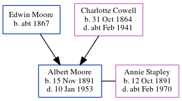

Edwin Moore c1867 -
[ Home ] | [ Calendar ] | [ Surnames Index ] | [ Errors ] | [ Family History ]Edwin Moore, the husband of Charlotte Priscilla Ann Cowell (the first cousin three-times-removed on the mother's side of Nigel Horne), was born in Malling, Kent, England c. 18671,2,3 and married Charlotte (a domestic servant with whom he had 3 children: Maude Rebecca Caroline, Mabel Emily Charlotte and Albert Edwin George) at St James the Great, East Malling, Kent, England on 30 Aug 18854 (Jul/Aug/Sep).
During his life, he was living at Standard Road, Bexley, London, England on 5 Apr 18916; at Priory Walk, Tonbridge, Kent on 31 Mar 19012; and at 5 Alexandra Road, Tonbridge, Kent on 2 Apr 19115.
Children
- Maude Rebecca Caroline was born on 30 Oct 1885
- Mabel Emily Charlotte was born on 8 Jul 1888
- Albert Edwin George was born on 15 Nov 1891
Citations
- 1891 England Census Online publication - Provo, UT, USA: The Generations Network, Inc., 2005.Original data - Census Returns of England and Wales, 1891. Kew, Surrey, England: The National Archives of the UK (TNA): Public Record Office (PRO), 1891. Data imaged from The National
- 1901 England, Wales & Scotland Census - Findmypast (was age 35 and the head of the household)
- 1911 England Census Online publication - Provo, UT, USA: Ancestry.com Operations, Inc., 2011.Original data - Census Returns of England and Wales, 1911. Kew, Surrey, England: The National Archives of the UK (TNA), 1911. Data imaged from the National Archives, London, England.
- England & Wales, FreeBMD Marriage Index: 1837-1915 Online publication - Provo, UT, USA: The Generations Network, Inc., 2006.Original data - General Register Office. England and Wales Civil Registration Indexes. London, England: General Register Office. © Crown copyright. Published by permission of the Cont
- 1911 Census for England & Wales - Findmypast (was age 44 and the head of the household)
- 1891 England, Wales & Scotland Census - Findmypast (was age 49 and the head of the household)
Media
1901 England, Wales & Scotland Census - GBC/1901/0006182208
Family Tree
Map
Generated by ged2site. Last updated on Jul 3, 2024